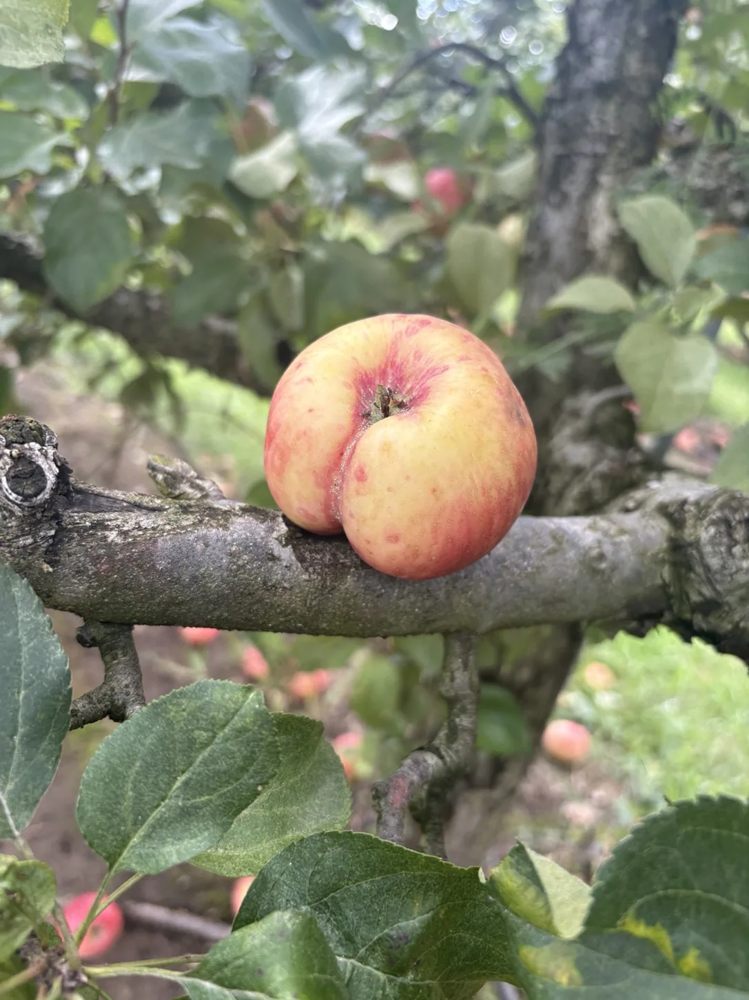
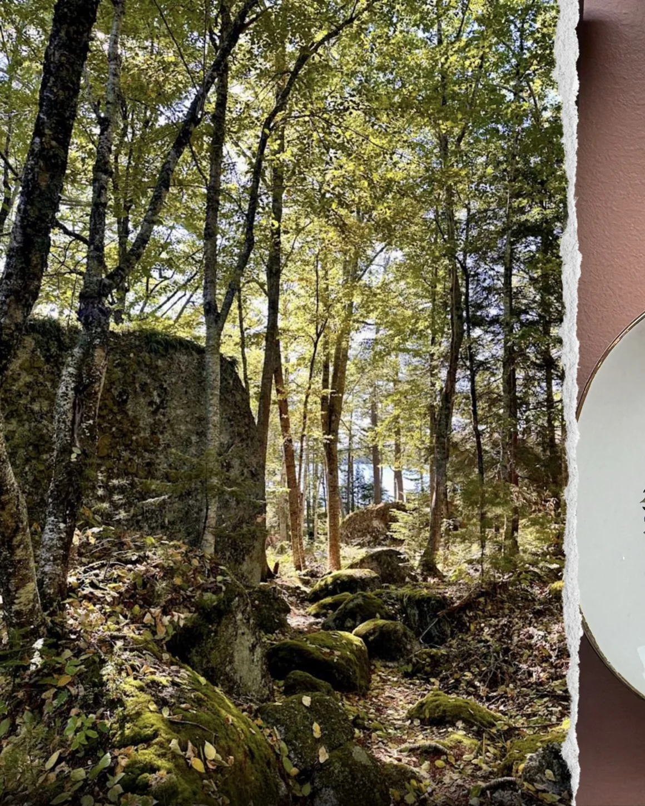

turn over ↗
i thought this deserved to be documented.
wall 01 / assorted sightings
things encountered while out and about.
some of them looked back.

i thought this deserved to be documented.

some very enthusiastic foliage.

somewhere with moss and a place to sit for a while.
it's probably just the plumbing.